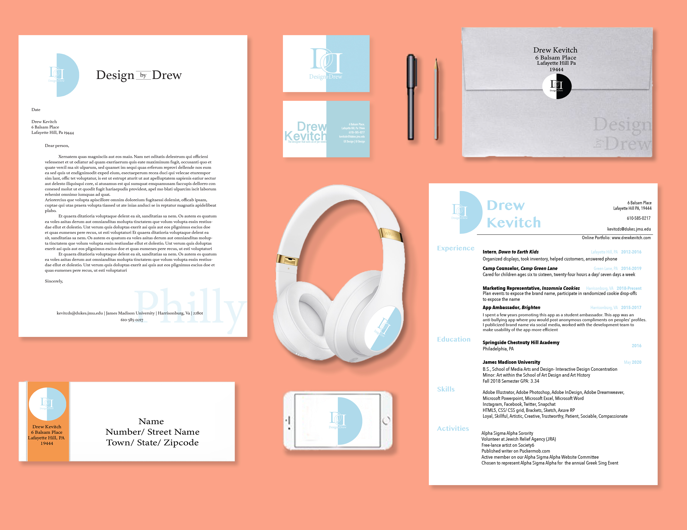

Welcome to My Online Portfolio
Design by Drew
The Designer that suits all of your needs
About Me
My name is Drew Kevitch and I am currently a second semester senior at James Madison University. I am majoring in Media Arts and Design with a concentration in Interactive Design. I am also minoring in Studio Art.
In my free time I love to spend time with my friends and family and watch TV and also engage in creative activities involving multiple forms of art. Right now, I also currently have three jobs. I am a student webdesigner for a company in Harrisonburg known as BizLab, I am a Marketing Representative for Insomnia Cookies and lastly I am a Brand Ambassador for a sports media app known as Vigit.
I grew up right outside of Philadelphia and that is where I intend to return after I graduate this spring. I will also be heading to Israel for 10 days to complete my Birthright trip, which is a free community service and educational experience that every kid of the Jewish religion gets the chance to complete. Below is my resume, which includes detailed descriptions of my jobs and other activities I like to participate in. Thank you for reading!
Experience
When it comes to work experience, I have had a wide range of different jobs. I currently am working for a design company at school called BizLab, I have experience with kids working at an overnight camp and I have multiple experiences in marketing. To learn more about the jobs I have, my extracirriculars and my skills, click my resume below! My resume is something I made myself as well from scratch with no template.
Graphic Design
I am very thankful to have such a wide variety of knowledge and skill involving different types of design in my background because it gives me a large range of opportunities and directions I can go in career wise. I am skilled in Graphic Design, Interactive Design and UX Design.
As a designer, I have a special passion for graphic design. I like the idea of being able to create a design that represents the meaning and purpose of a company. The creations for logo's and brand icons are endless and I find it exciting to explorethe endless possibilities I am capable of developing through design and creation. Below are a few graphic design projects I made and created myself, hope you enjoy!

Interactive and UX Design
Interactive Design and UX Design come hand in hand. UX Design stands for User Research Design. This type of design focuses on the user and their wants and needs in order to achieve a goal as efficiently as possible with no frustrations. Interactive Design is the actual production and building of the product, app or website for the user.
In class we often code websites from scratch in order to get a better feel for how things are put together and to strengthen our skills as front end coders and visual designers. Below are downloadable files of previous projects I have conducted user research on and websites I built in class with the intention of strengthening specific skills. Hope you enjoy!
SMAD Connect Me
This project focused mainly on user research. We were instructed to create an app from scratch and thoroughly go through the user research steps to bring it to life.